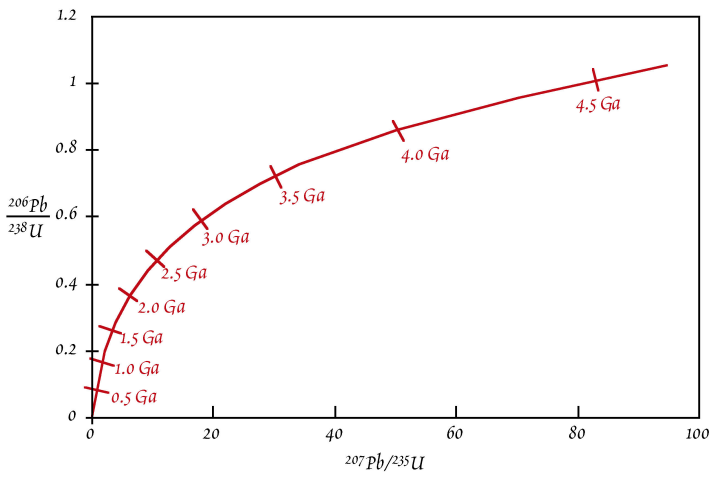
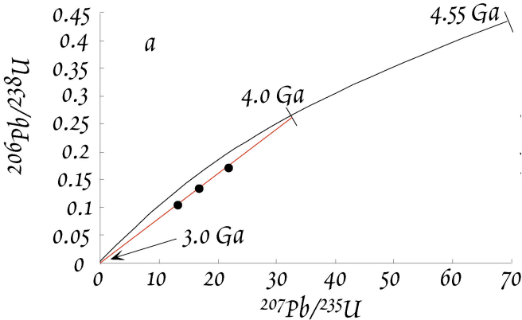
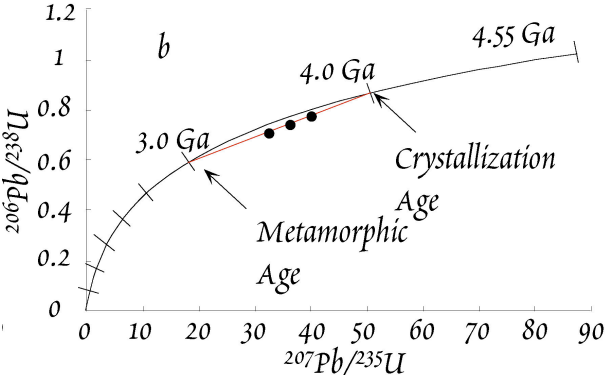

U-Th-Pb Decay
Contents
U-Th-Pb Decay#
# import relevant modules
%matplotlib inline
import numpy as np
import matplotlib.pyplot as plt
import pandas as pd
from IPython.display import display
from math import log10, floor
# create our own functions
# function to round a value to a certain number of significant figures
def round_to_n_sf(value, no_of_significant_figures):
value_rounded = round(value, no_of_significant_figures-1-int(floor(log10(abs(value)))))
return value_rounded
U-Th-Pb Decay System#
The actinide elements \(U\) (uranium) and \(Th\) (thorium) can be classified as lithophile. In contrast, \(Pb\) (lead) also has an affinity to metal and sulfurcontaining compounds. \(Pb\) therefore displays lithophile, chalcophile, and siderophile behavior.
\(U\), \(Th\), and \(Pb\) are trace elements in the continental crust and mantle with typical rock concentrations that are in the \(ppb\) to \(ppm\) range. All three elements can form their own minerals but these are very rare. \(Pb\) generally occurs in dispersed form in the crust and mantle. On the other hand, \(U\) and \(Th\) are enriched in some minerals (like monazite and zircon) that are important in the continental crust. Such phases are not important in the mantle, however, where \(U\) and \(Th\) occur in dispersed form.
Both \(U\) and \(Th\) are quadrivalent (\(+4\)) in silicates and as a result they display similar geochemical behavior in this environment. However, \(U\) is hexavalent (\(+6\)) under oxidizing conditions, where it forms the uranyl-cation (\(UO_2^{2+}\)). This ion is soluble in water, whereas \(Th^{4+}\) and \(U^{4+}\) are very insoluble. This generates a decoupling of \(Th\) from \(U\) in the hydrosphere. \(Pb\) is typically divalent in silicates. It readily substitutes for \(K^+\) in feldspars, like \(Sr^{2+}\).
U, Th, and Pb are all highly incompatible in the mantle mineralogy. The concentrations of these elements thus increase in the melt during magma differentiation. In the mantle, \(Th\) is slightly more incompatible than \(U\). Both elements are more incompatible than the REE. \(Pb\) has about the same incompatibility as the LREE \(Ce\) (cerium) and \(Nd\).
These three elements share three long-lived radioactive decay systems with different half-lives:
In principle, each of these decay systems can be utilized separately for geochronology.
The simple isochron approach is, however, only of very limited utility due to the mobility of \(Th\), \(Pb\), and particularly \(U\) even at low-grade metamorphic conditions and during weathering. This open system behavior is enhanced by the radiation damage that occurs to crystals from \(\alpha\)-decay.
The real power of the decay systems is unlocked through techniques that make use of the fact that two \(U\) isotopes decay to two different \(Pb\) isotopes. As a consequence, we have two decay systems – \({^{238}U}\)-\({^{206}Pb}\) and \({^{235}U}\)-\({^{207}Pb}\) – where both the parent and the daughter nuclides are from the same element, such that they are chemically identical. There are two distinct geochemical techniques that exploit this particular advantage:
The “common \(Pb\)” methods – introduction given here but detailed discussion in my Planetary Science course.
The zircon dating method (Concordia diagram) – discussed in this lecture.
Common Pb Method#
To appreciate the power of the Pb isotope systems, we first need to explore some simple maths.
In the following, the atomic ratio \({^{238}U}/{^{204}Pb}\) is designated as \(\mu\) and we make use of the fact that the ratio \({^{238}U}/{^{235}U}\) is constant on Earth at \(137.88\). With this, the decay equations for the \({^{235}U}\)-\({^{207}Pb}\) and \({^{238}U}\)-\({^{206}Pb}\) decay systems can be written as:
These equations can be simplified by subtracting the initial ratio from both sides, and by using \(\Delta\) to designate the difference between the present-day and the initial isotope ratio. With this, the decay equation for \({^{238}U}\)-\({^{206}Pb}\) is:
If we divide the equivalent equation for \(^{235}U\) by the above equation, we obtain:
This equation defines the slope of a line in a plot of \({^{207}Pb}/{^{204}Pb}\) vs. \({^{206}Pb}/{^{204}Pb}\). The slope depends only on the time (age) \(t\) and three constants (\(\lambda_{235}\), \(\lambda_{238}\), and \({^{235}U}/{^{238}U} = 1/137.88\).
Because the slope depends on time, a line in a \({^{207}Pb}/{^{204}Pb}\) vs. \({^{206}Pb}/{^{204}Pb}\). plot is equivalent to an isochron.
We arrived at this equation by subtracting the initial ratio from the present-day ratio for a single sample. However, we could derive the same equation by subtracting the equations for two separate samples that share a common initial \(Pb\) isotope composition and age.
This equation differs from conventional isochron equations because the initial isotope composition and the parent-daughter ratio do not appear. This means that if we measure the \(Pb\) isotope compositions of a suite of samples, which (i) shared the same initial \(Pb\) isotope composition at some time \(t\) in the past, and (ii) have all remained closed to \(U\) & \(Pb\) loss/gain since then, we can determine the age of the system without any knowledge of the parent-daughter ratio. Unfortunately, the equation cannot be solved directly for \(t\). It can, however, be readily be solved with simple iterative techniques or with the help of tables. Once the equation has been solved for the age \(t\), we can use this age to solve for the parent-daughter ratio (e.g., \(\mu = {^{238}U}/{^{204}Pb}\)) of the system. This can be achieved by rearranging the following equation:
Normal \(U\)-\(Pb\) isochrons often give erroneous results because \(U\) (& to a lesser extent \(Pb\)) are very mobile. If the loss (or gain) of \(U\) occurred recently, the \(Pb\) isotope ratios are (essentially) unaffected and useful \(Pb\)-\(Pb\) ages can still be obtained. \(Pb\)-\(Pb\) isochron dating has been particularly successful and important for meteorite studies.
Problem Set 6 - Question 3#
The \(Pb\) isotope data of basalts from seamounts at the Juan de Fuca Ridge form a line with a slope of \(m = 0.101\) in a plot of \({^{207}Pb}/{^{204}Pb}\) (\(y\)) versus \({^{206}Pb}/{^{204}Pb}\) (\(x\)). If this line is an isochron, what is the corresponding age? Use the Table below to obtain the age by interpolation.
# create a dataframe to show the numerical values of relevant parameters as a function of t
Gyr = np.linspace(0, 4.6, 24)
e_to_lambda_1_t_minus_1_list = [0.0000, 0.0315, 0.0640, 0.0975, 0.1321,
0.1678, 0.2046, 0.2426, 0.2817, 0.3221,
0.3638, 0.4067, 0.4511, 0.4968, 0.5440,
0.5926, 0.6428, 0.6946, 0.7480, 0.8030,
0.8599, 0.9185, 0.9789, 1.0413]
e_to_lambda_2_t_minus_1_list = [0.0000, 0.2177, 0.4828, 0.8056, 1.1987,
1.6774, 2.2603, 2.9701, 3.8344, 4.8869,
6.1685, 7.7292, 9.6296, 11.9437, 14.7617,
18.1931, 22.3716, 27.4597, 33.6556, 41.2004,
50.3878, 61.5752, 75.1984, 91.7873]
radiogenic_207Pb_206Pb_ratio_list = [0.04604, 0.05012, 0.05471, 0.05992, 0.06581,
0.07250, 0.08012, 0.08879, 0.09872, 0.11000,
0.12298, 0.13783, 0.15482, 0.17436, 0.19680,
0.22286, 0.25241, 0.28672, 0.32634, 0.37212,
0.42498, 0.48623, 0.55714, 0.63930]
dict1 = {'Gyr' : Gyr,
'$$e^{\lambda_1t}-1$$' : e_to_lambda_1_t_minus_1_list,
'$$e^{\lambda_2t}-1$$' : e_to_lambda_2_t_minus_1_list,
'$${^{207}Pb^*}/{^{206}Pb}$$' : radiogenic_207Pb_206Pb_ratio_list}
df1 = pd.DataFrame(dict1)
df1.loc[:, 'Gyr'] = df1['Gyr'].map('{:.1f}'.format)
df1.loc[:, '$$e^{\lambda_1t}-1$$'] = df1['$$e^{\lambda_1t}-1$$'].map('{:.4f}'.format)
df1.loc[:, '$$e^{\lambda_2t}-1$$'] = df1['$$e^{\lambda_2t}-1$$'].map('{:.4f}'.format)
df1.loc[:, '$${^{207}Pb^*}/{^{206}Pb}$$'] = df1['$${^{207}Pb^*}/{^{206}Pb}$$'].map('{:.5f}'.format)
print("Table 1")
display(df1.style.hide_index())
Table 1
| Gyr | $$e^{\lambda_1t}-1$$ | $$e^{\lambda_2t}-1$$ | $${^{207}Pb^*}/{^{206}Pb}$$ |
|---|---|---|---|
| 0.0 | 0.0000 | 0.0000 | 0.04604 |
| 0.2 | 0.0315 | 0.2177 | 0.05012 |
| 0.4 | 0.0640 | 0.4828 | 0.05471 |
| 0.6 | 0.0975 | 0.8056 | 0.05992 |
| 0.8 | 0.1321 | 1.1987 | 0.06581 |
| 1.0 | 0.1678 | 1.6774 | 0.07250 |
| 1.2 | 0.2046 | 2.2603 | 0.08012 |
| 1.4 | 0.2426 | 2.9701 | 0.08879 |
| 1.6 | 0.2817 | 3.8344 | 0.09872 |
| 1.8 | 0.3221 | 4.8869 | 0.11000 |
| 2.0 | 0.3638 | 6.1685 | 0.12298 |
| 2.2 | 0.4067 | 7.7292 | 0.13783 |
| 2.4 | 0.4511 | 9.6296 | 0.15482 |
| 2.6 | 0.4968 | 11.9437 | 0.17436 |
| 2.8 | 0.5440 | 14.7617 | 0.19680 |
| 3.0 | 0.5926 | 18.1931 | 0.22286 |
| 3.2 | 0.6428 | 22.3716 | 0.25241 |
| 3.4 | 0.6946 | 27.4597 | 0.28672 |
| 3.6 | 0.7480 | 33.6556 | 0.32634 |
| 3.8 | 0.8030 | 41.2004 | 0.37212 |
| 4.0 | 0.8599 | 50.3878 | 0.42498 |
| 4.2 | 0.9185 | 61.5752 | 0.48623 |
| 4.4 | 0.9789 | 75.1984 | 0.55714 |
| 4.6 | 1.0413 | 91.7873 | 0.63930 |
In a plot of \({^{207}Pb}/{^{204}Pb}\) (\(y\)) versus \({^{206}Pb}/{^{204}Pb}\) (\(x\)), a slope (\(\Delta y / \Delta x\)) = \(0.101\) is thus equal to \({^{207}Pb^*}/{^{206}Pb}\). From the table above, it can be seen that 0.101 is between \({^{207}Pb^*}/{^{206}Pb}=0.09872\) at \(t=1.6\,Gyr\) and \({^{207}Pb^*}/{^{206}Pb}=0.11000\) at \(t=1.8\,Gyr\). Between these two points, we can make a linear interpolation, which can be done numerically or graphically, to find the age corresponding to \({^{207}Pb^*}/{^{206}Pb}=0.101\).
Numerically (\(x\) and \(y\) be the ages (\(t\)) and the \(Pb\)-ratio data (\(m\)) respectively),
# Question 1a
# given slope (Pb-ratio)
m = 0.101
# since the values in the data have been ordered,
# inserting the given value into the Pb-ratio list and then sorting the list's elements
# can lead us know where the new value is between
new_Pb_ratio_list = radiogenic_207Pb_206Pb_ratio_list + [m]
new_Pb_ratio_list.sort()
m_index = new_Pb_ratio_list.index(m)
two_Gyr_where_m_in_between = [Gyr[m_index-1], Gyr[m_index]]
two_Pb_ratio_where_m_in_between = [radiogenic_207Pb_206Pb_ratio_list[m_index-1], radiogenic_207Pb_206Pb_ratio_list[m_index]]
# create a polynomial degree 1 - ie a straight line - to
# linearly connect (fit) the two data points where the given Pb-ratio is in between.
poly_coeffs=np.polyfit(two_Pb_ratio_where_m_in_between, two_Gyr_where_m_in_between, 1)
p1 = np.poly1d(poly_coeffs)
# print answer
answer = p1(m)
print("The corresponding age is %g Gyr." % round_to_n_sf(answer, 3))
# plot
# set figure size
plt.figure(figsize=(15,6))
# Plot data points
plt.plot(Gyr, radiogenic_207Pb_206Pb_ratio_list, 'k.', label="Data points")
# plot linear interpolant
plt.plot(two_Gyr_where_m_in_between, two_Pb_ratio_where_m_in_between, 'b', label="Linear interpolant")
# plot answer
plt.plot(answer, m, 'r.', label="Answer")
# label and title the plot
plt.xticks(Gyr)
plt.xlabel('Age (Gyr)')
plt.ylabel('${^{207}Pb^*}/{^{206}Pb}$')
plt.title('Interpolation to find the age corresponding to ${^{207}Pb^*}/{^{206}Pb} = 0.101$', fontsize=14)
plt.legend(loc='best', fontsize=10)
The corresponding age is 1.64 Gyr.
<matplotlib.legend.Legend at 0x115eb161f70>
Zircon Dating Method (Concordia Diagram)#
Zircon Geochronology#
The mineral zircon (\(ZrSiO_4\)) has a number of properties that make it extremely useful for geochronology.
It is very hard, making it resistant to mechanical weathering.
It is also very resistant to chemical weathering and metamorphism.
It concentrates \(U\) (& to a lesser extent \(Th\)) but it excludes \(Pb\), such that it typically has very high \({^{238}U}/{^{204}Pb}\) ratios (\(\mu\)-values)
It is a reasonably common accessory phase in many crustal rocks.
Zircons are excellent clocks!
Concordia Diagram#
The very high \(\mu\)-values of zircons (and a few other minerals such as sphene and apatite) provide unique chronological opportunities and a special diagram - the concordia diagram - has been developed to take advantage of this.
The concordia diagram is a plot of \({^{206}Pb^*}/{^{238}U}\) vs. \({^{207}Pb^*}/{^{235}U}\) (see below). \(Pb^*\) represents the radiogenic \(Pb\) only.

The basic decay equation for the \({^{238}U}\)-\({^{206}Pb}\) decay system is:
A mineral like zircon concentrates \(U\) but it incorporates only very small quantities of \(Pb\). In this case, we can ignore the initial \({^{206}Pb}_0\) term, such that the equation simplifies to:
where {^{206}Pb}^* represents the radiogenic \(Pb\) only. An analogous equation can be written for the decay of \(^{235}U\):
These two anologous equations demonstrate that \({^{206}Pb^*}/{^{238}U}\) and \({^{207}Pb^*}/{^{235}U}\) are proportional to time (or age).
The concordia curve of a concordia diagram can be drawn by substituting successive values of t into the right-hand side of the two equations above and plotting the results (\({^{206}Pb^*}/{^{238}U}\) and \({^{207}Pb^*}/{^{235}U}\)) for each value of \(t\). The curve is the locus of points for which the \({^{238}U}\)-\({^{206}Pb}\) age is equal to the \({^{235}U}\)-\({^{207}Pb}\) age. Such ages are termed as concordant. The best way to think about the evolution of the Pb/U ratios and the concordia curve is to imagine that the curve evolves with time – essentially it “grows” out of the origin of the plot.
Take a \(4\,Ga\) old zircon, for example. When it first formed, an analysis would have revealed \(Pb^*/U\) ratios of \(0\), such that it plotted at the origin of the diagram. Then, \({^{207}Pb^*}/{^{235}U}\) would have initially increased much more rapidly than \({^{206}Pb^*}/{^{238}U}\). This is because at \(4\,Ga\) there was still a lot of \(^{235}U\) around and this has a much shorter half-life than \(^{238}U\). The initial evolution thus has a “flat” slope. Had someone been around \(3\,Gyr\) ago, he would have drawn the following concordia diagram. Note the similar expansion of the x-axis relative to the modern diagram and the limited expansion of the y-axis. As time passed, radioactive decay slowly depleted most of the \(^{235}U\). After \(\sim 2\,Ga\), we therefore see large changes in \({^{206}Pb^*}/{^{238}U}\) per unit of time, whereas \({^{207}Pb^*}/{^{235}U}\) does not change much any more.
Open-System Behavior#
Any zircon that has remained a completely closed system for \(Pb\) and \(U\) since its formation must plot on the concordia curve. However, most zircons do not meet this requirement in practice. What happens when a zircon looses or gains \(Pb\) or \(U\)? The most common form of open-system behavior is \(Pb\)-loss, so we will focus on this.
An important point is that \(^{206}Pb\) and \(^{207}Pb\) will be lost in exactly the same proportions at which they are present in the zircon, as these two isotopes are chemically essentially identical.
Let’s again use the example of the \(4\,Gyr\) old zircons. These zircons are now assumed to have experienced \(Pb\) loss due to a metamorphic event that occurred at \(3\,Ga\). If the loss of \(Pb\) was complete, the zircons would plot at the origin - they would be indistinguishable from new zircons that formed at \(3.0\,Ga\). Such a complete loss of \(Pb\) is very uncommon, however. More common is a partial loss of \(Pb\), which leads to a partial resetting of the \(Pb^*/U\) ratios for the zircons. Our example features three \(4\,Ga\) zircons that have lost ~\(40\) to \(60\%\) of their radiogenic \(Pb\) at \(3.0\,Ga\). This partial \(Pb\) loss will move the points down from the concordia along a straight line to the origin. The zircons are now discordant and they plot on a straight line called discordia. Note the ages of the intercepts of concordia & discordia! The exact position on the discordia for a particular zircon is determined by the fraction of Pb that is lost during open system behavior.

If we now wait for \(3\,Gyr\) and let the zircons further evolve isotopically, the concordia diagram will look as shown below.

The discordia remains a line that intercepts the concordia at \(4\,Ga\) and \(3\,Ga\), which are the ages of (i) zircon formation/crystallization and (ii) the metamorphic event. This is brilliant because we can obtain the ages of both events with a single measurement!
Researchers have developed special techniques to precisely define a discordia line and determine the upper and lower intercept ages. To this end, they select several different populations of zircons from a larger pool, based on size, color, shapes, magnetic properties. Alternatively, some zircons are treated by gentle abrasion to remove the outer layers, which are typically more strongly reset (or completely re-grown). Following abrasion, one may obtain cores which are nearly concordant. Such selected zircons are then dissolved completely and analyzed.
Problem Set 7 - Question 1#
Zircons were found to have ratios of \({^{238}U}/{^{204}Pb} = 6807.4\) and \({^{235}U}/{^{204}Pb} = 49.372\) and \(Pb\) isotope compositions of \({^{206}Pb}/{^{204}Pb} = 1673.54\) and \({^{207}Pb}/{^{204}Pb} = 187.50\). Based on the analyses of associated feldspars, the “common” inherited \(Pb\) of the zircons is estimated to have Pb isotope ratios of \({^{206}Pb}/{^{204}Pb} = 16.25\) and \({^{207}Pb}/{^{204}Pb} = 15.51\).
a) Calculate the radiogenic ratios of \(({^{206}Pb}/{^{204}Pb})^*\) and \(({^{207}Pb}/{^{204}Pb})^*\) by subtracting the inherited \(Pb\) contribution \(({^{206}Pb}/{^{204}Pb})_0\) from the measured \(Pb\) isotope compositions, e.g.:
b) Calculate the \({^{206}Pb}/{^{204}Pb}\), \({^{207}Pb}/{^{204}Pb}\) and \({^{207}Pb}\)-\({^{206}Pb}\) ages of the zircons. Rearrange the general decay equations to calculate the \({^{206}Pb}/{^{204}Pb}\) and \({^{207}Pb}/{^{204}Pb}\) ages, e.g.:
The Pb-Pb age is obtained by calculating the value:
This term is equivalent to an age but the equation cannot be solved analytically. You must therefore calculate the age by interpolation from Table 1 (the same table as in Problem Set 6 - Question 3).
# Question 1a
# Given values
measured_206Pb_204Pb_ratio = 1673.54
measured_207Pb_204Pb_ratio = 187.50
common_inherited_206Pb_204Pb_ratio = 16.25
common_inherited_207Pb_204Pb_ratio = 15.51
# calculate radiogenic Pb ratios
radiogenic_206Pb_204Pb_ratio = measured_206Pb_204Pb_ratio - common_inherited_206Pb_204Pb_ratio
radiogenic_207Pb_204Pb_ratio = measured_207Pb_204Pb_ratio - common_inherited_207Pb_204Pb_ratio
# print answers
print("The radiogenic Pb-206/Pb-204 ratio is %.2f." % radiogenic_206Pb_204Pb_ratio)
print("The radiogenic Pb-207/Pb-204 ratio is %.2f." % radiogenic_207Pb_204Pb_ratio)
The radiogenic Pb-206/Pb-204 ratio is 1657.29.
The radiogenic Pb-207/Pb-204 ratio is 171.99.
# Question 1b
# Function to calculate the ages of Pb-ratios.
def Pb_ratio_age(U_isotopic_mass, radiogenic_Pb_ratio, U_Pb_ratio):
if U_isotopic_mass == 238:
decay_const = 1.55 * 10**-10 # decay constant of U-238 (yr^-1)
elif U_isotopic_mass == 235:
decay_const = 9.85 * 10**-10 # decay constant of U-235 (yr^-1)
return (1/decay_const) * np.log((radiogenic_Pb_ratio/U_Pb_ratio) + 1)
# Given values
U238_Pb204_ratio = 6807.4
U235_Pb204_ratio = 49.372
# Calculate the ages of Pb-ratios
Pb206_Pb204_ratio_age = Pb_ratio_age(238, radiogenic_206Pb_204Pb_ratio, U238_Pb204_ratio)
Pb207_Pb204_ratio_age = Pb_ratio_age(235, radiogenic_207Pb_204Pb_ratio, U235_Pb204_ratio)
# print answers
print("The Pb-206/Pb-204 age is %.3e yrs." % Pb206_Pb204_ratio_age)
print("The Pb-207/Pb-204 age is %.3e yrs." % Pb207_Pb204_ratio_age)
# calculate 207Pb*/206Pb*
radiogenic_207Pb_206Pb_ratio = radiogenic_207Pb_204Pb_ratio/radiogenic_206Pb_204Pb_ratio
# we can calculate the Pb-207/Pb-206 age by following the same procedure as in Problem Set 6 - Question 3
# Pb-207/Pb-206
m = radiogenic_207Pb_206Pb_ratio
# since the values in the data have been ordered,
# inserting the given value into the Pb-ratio list and then sorting the list's elements
# can lead us know where the new value is between
new_Pb_ratio_list = radiogenic_207Pb_206Pb_ratio_list + [m]
new_Pb_ratio_list.sort()
m_index = new_Pb_ratio_list.index(m)
two_Gyr_where_m_in_between = [Gyr[m_index-1], Gyr[m_index]]
two_Pb_ratio_where_m_in_between = [radiogenic_207Pb_206Pb_ratio_list[m_index-1], radiogenic_207Pb_206Pb_ratio_list[m_index]]
# create a polynomial degree 1 - ie a straight line - to
# linearly connect (fit) the two data points where the given Pb-ratio is in between.
poly_coeffs=np.polyfit(two_Pb_ratio_where_m_in_between, two_Gyr_where_m_in_between, 1)
p1 = np.poly1d(poly_coeffs)
# print answer
answer = p1(m)
print("The Pb-207/Pb-206 age is %g Gyr." % round_to_n_sf(answer, 3))
# plot
# set figure size
plt.figure(figsize=(15,6))
# Plot data points
plt.plot(Gyr, radiogenic_207Pb_206Pb_ratio_list, 'k.', label="Data points")
# plot linear interpolant
plt.plot(two_Gyr_where_m_in_between, two_Pb_ratio_where_m_in_between, 'b', label="Linear interpolant")
# plot answer
plt.plot(answer, m, 'r.', label="Answer")
# label and title the plot
plt.xticks(Gyr)
plt.xlabel('Age (Gyr)')
plt.ylabel('${^{207}Pb^*}/{^{206}Pb}$')
plt.title('Interpolation to find the age corresponding to ${^{207}Pb^*}/{^{206}Pb} = 0.101$', fontsize=14)
plt.legend(loc='best', fontsize=10)
The Pb-206/Pb-204 age is 1.406e+09 yrs.
The Pb-207/Pb-204 age is 1.523e+09 yrs.
The Pb-207/Pb-206 age is 1.69 Gyr.
<matplotlib.legend.Legend at 0x115ebbc7400>

References#
Lecture slide and Practical for Lecture 6 and 7 of the High-Temperature Geochemistry module